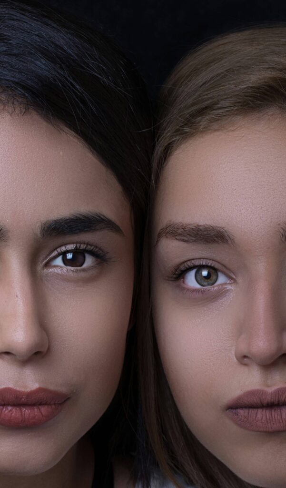
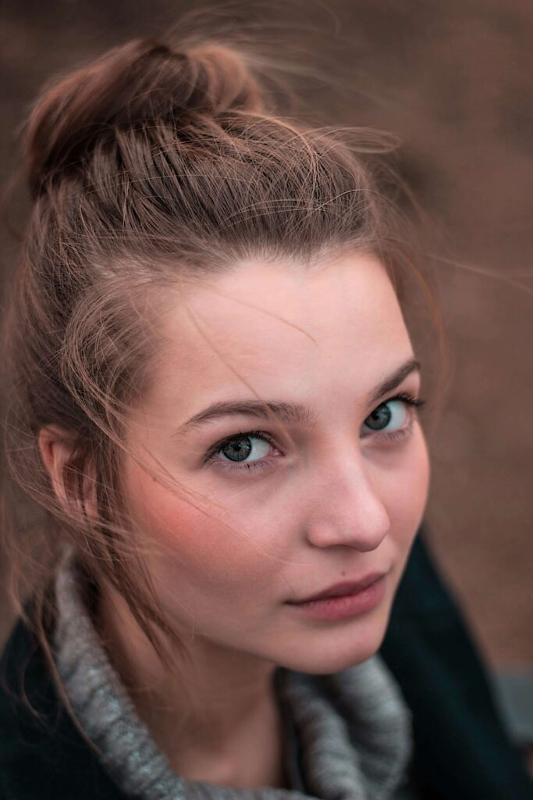

向恩典敞開
從肩頸與呼吸開始，讓接受碰觸的人逐步安定。
 舊站影像／設計示意
舊站影像／設計示意以溫柔的碰觸，讓臉部與身體重新記得放鬆。從肩頸、面部到頭部，學習一套由內而外滋養自己的完整手法。
面部肌肉十分細緻敏感。這份工作不是矯正，而是透過輕彈、按壓與手指漫步，讓我們練習聽見身體。
課程融合穴位、傳統日式臉部護理與當代身心學。從肩頸的碰觸開始，撫慰日常蓄積的壓力，也在身體形成一份新的註記：我可以慢下來，也可以溫柔地接受自己。正式內容仍須由內容負責人核准。
同一組課程影像可依內容目的選擇不同拓撲。預設使用 A2 編輯拼貼；其餘四款支援分階、長段落、條列與圖片說明，其中三款依參考圖轉化為更具章節感的響應式閱讀模式。舊站影像／設計示意



觸碰不是矯正；是讓身體感覺自己被聽見。
從肩頸與呼吸開始，讓接受碰觸的人逐步安定。

辨認支持、力道與節奏之間的關係。
從局部觀察身體兩側與表情的細微差異。
把臉部、肩頸與身體中心視為完整系統。
練習在操作中回到自己的呼吸與重心。
讓技巧不只正確，也能保持覺察與連續。
整合局部技巧，回到完整個案的閱讀。

辨認上下、左右、內在與外在，完成一套可實踐的方法。
先從呼吸、支持與界線開始，理解技巧發生之前，操作者如何安定自己，也如何讓接受碰觸的人保有選擇。
當手法逐漸熟悉，學習焦點從「做對步驟」移向「讀懂正在發生什麼」，並依個案狀態調整次序與停留時間。
最後不是累積更多招式，而是能在關係中保持清楚：知道自己如何碰觸、對方如何回應，以及什麼時候應該慢下來。
這個單元以觀看與反覆操作建立共同語言。圖片不只是成果展示，而是用來辨認手位、身體距離、視線方向與接受者反應；每一張都對應一個可被討論的學習重點。
進階學習將規律與自由放在一起：先熟悉可重複的流程，再練習根據張力、呼吸與回饋調整。這不是任意改變，而是建立在清楚觀察、溝通與界線之上的選擇。
將長篇課程內容整理成可掃讀的檔案：先看學習主題，再閱讀說明與細項，最後用圖片回到實際操作情境。
理解操作者站位、床面高度與接受者支撐方式如何影響力道與連續性。
練習以觀察取代推測，從表情、肌肉回彈與口頭回饋調整操作。
把技巧放回溝通與同意之中，建立可重複、可說明也能因人調整的完整流程。
從心理學、靜心與身體工作出發，將日式面部按摩帶入跨文化的教學實踐。
本區保留長文空間，讓資格、方法來源與生命經歷可以被完整閱讀；肖像未核准前不以其他人物照片代替。姓名與經歷正式發布前仍須確認。
「當我們慢下來、靜下來，不是去矯正，而是陪伴與傾聽。」內容結構示意・正式發布前須取得核准
每一階都能展開閱讀；預設只開啟第一階，避免長篇課綱一次淹沒讀者。
舊站影像／設計示意不需要按摩基礎。課程以大量親手操練，支持你把所學帶回日常照顧或專業工作。
日期、地點與時間取自舊站內容作版面示意；正式發布前需由內容負責人確認。
舊站時間 09:30–18:30・地點待確認
名額與費用待內容負責人確認。
需完成第一階；日期、名額與報名狀態待發布。
報名連結與本期招生資訊尚未核准，因此不顯示假價格、倒數或可點擊的報名連結。